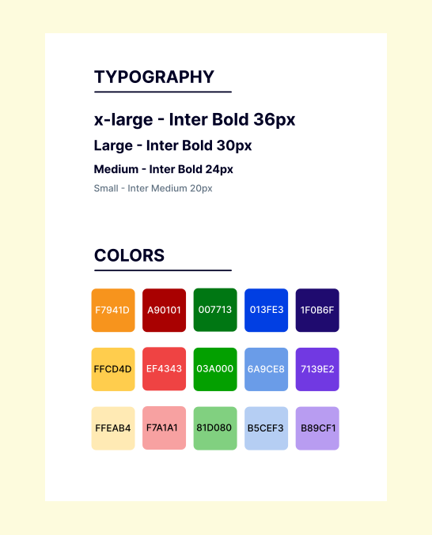

Designing a Prosocial Card Game
Helping Promote Prosocial Behavior in a Gamified Manner
Background:
Duration: August - September (10 weeks)
Role: UI Designer
The Team: Dr. June Anh, Dr. Gustavo Carlo, Marixsa Torres, Me
Purpose: Promote prosocial behaviors in adoloscents to encourage positive traits in themselves and in their treatment of others.
Context
We are the Prosocial Design Team at the UC Irvine Design and Partnership Lab. At the daplab, we combine research and design to create educational tools. As the design team for The Prosocial Card Game, our job is to ensure our project conveys a message of prosocial behavior while upholding simple and usable design features.
The Problem?
Problem
"Prosocial behavior is linked to an increased amount of self-esteem, academic success, positive relationships, and overall treatment of others. However, there has been a downward spiral of prosocial behaviors in adolescents that can adversely affect their empathic reasoning."
Prosocial Behavior in Adolescence: Gender Differences in Development and Links with Empathy
User Goal:
Our goal is to help promote prosocial behavior and make users aware of the consequences of their actions, especially in adolescents (aged 13-19).
In order to help motivate adolescents to put into practice and develop prosocial skills, we created a board game that allows users to collaboratively work together to solve social dilemmas. Throughout the game, players can explore different emotional takes on situations and see through various perspectives. Ultimately, the goal of the game is to promote empathy within the players and see how each decision affects the scenarios, also promoting awareness.
Design process
Design Guidelines
In order to maintain a cohesive look within the overall design of the cards, board, and additional material (such as the storybook and comic strips), I created a small design system to follow throughout the design process.
The font chosen for this project was Inter because it’s a very clean and readable font. The high legibility drew me to choose this font for our design.
Style Tile of the Prosocial Card Game
The colors chosen are directly related to the colors we found to be most closely related to our core 5 emotions: Joy (Yellow/Orange), Anger (Red), Disgust (Green), Sadness (Blue), and Fear (Purple).
Card Design
Initially, we wanted the emotion cards to present two measures of the game: one measuring the impact on the played card and the other measuring the effect on all the other emotions. The played card would increase in points, while all the rest decreased until one inevitably hit zero or the game was won; however, we scrapped this idea because we wanted to focus on the positive and did not want to take away points from any emotion.
Reducing text and increasing visual cues in the card design
In addition, we wanted to move away from using text as descriptors and focus on creating stories and features that could be easily understood in a visual format. Since our game is focused on younger children from impoverished countries, mainly those residing in Spanish detention centers, they do not have access to the same opportunities and education systems as are available here in the U.S.. Thus, we wanted this game to be easily comprehensible, straightforward, and have a clear message of compassion, empathy, and overall prosocial behavior.
Simplifying the world impact design and continuing to mid-fi
Board Game Design
Since the game focuses on the world impact of emotions and behaviors associated with it, I wanted to create a visual representing that all the events in the game will take place on Earth, and create that visual connection for players.
On the board, there are a multitude of white points that each represent a story. As the players continue their gameplay, their decisions will affect their next path/scenario to move on to. Ultimately, the goal is to reach the end of the game board without imbalancing the emotions too much. If an emotion reaches its final point before reaching the end point, the game should be restarted and attempted again.
Storybook Design
For the storybook design, I wanted the design to resemble a comic book; providing visuals for the players and accompanying bits of text to help describe the scenes. Text use in this section was kept to a minimum.
Reflection
Working as a solo UI designer, I proactively made various design decisions that shaped the direction of the game. Because of this, it was essential that I checked in often with the project leads and stakeholders, ensuring that my work continuously reflected their goals as well.
What's Next?
1. Get feedback on current designs.
Although the designs are fully fleshed out, we want to create the best experiences for our users. We plan to iterate with the feedback from researchers and former teachers we get from the design, making our designs as intuitive as possible.
2. Start implementing consistent and accessible designs in React.
Transitioning to develop our designs, we plan to expand our team and include developers in the process of creating consistent and accessible products. With the team expanding, it may take more time for the developers to learn the consistency and accessibility concepts. Additionally, we want to explore more accessibility features that would potentially increase inclusivity for beyond users of colorblindness, such as users with difficult hearing or age-related barriers for Edsight.